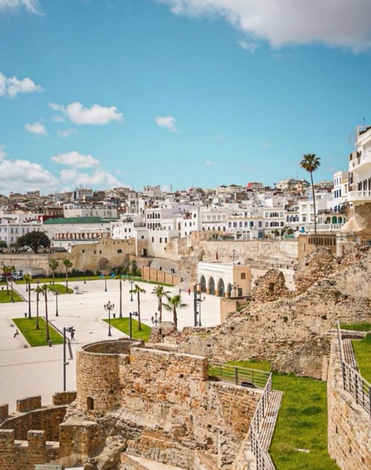

Explore by Category
Find exactly what you're looking for
Beach

Plage Achakar
A wild, untouched beach near the Caves of Hercules — one of Tangier's best-kept secrets.
Beach

Plage Malabata
A stunning sandy beach stretching along the Bay of Tangier, perfect for swimming and sunsets.
Beach

Plage Rmilat
A charming urban beach right in the heart of Tangier, with a beautiful seaside promenade.
Cafe

Café Hafa
A legendary cliffside tea house overlooking the Strait of Gibraltar, frequented by artists and writers.
Tourist Spot

Caves of Hercules
A mythical natural sea cave on the Atlantic coast, where legend says Hercules rested before his labors.
Tourist Spot
Grand Socco
The vibrant main square of Tangier's medina, a meeting point of old and new Morocco.
Page 1 of 2